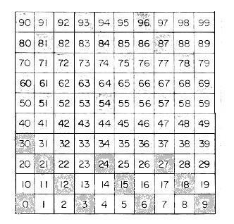
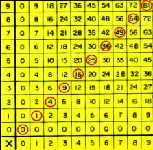
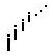

<html>

<head>
<meta http-equiv="Content-Type" content="text/html; charset=windows-1252">
<meta name="GENERATOR" content="Microsoft FrontPage 5.0">
<meta name="ProgId" content="FrontPage.Editor.Document">
<title>Patterns in numbers</title>
<style>
<!--
.Arial       {  }
-->
</style>
</head>

<body>

<p align="center"><font size="5"><font color="#000000">1. </font><font color="#0000FF">Patterns
in <b>numbers</b></font></font></p>
<p><span style="font-family:Arial">1.<b><font size="4">Count</font></b><span style="font-family: Arial"><b><font size="4">ing</font></b></span><span style="mso-spacerun:
yes">&nbsp; </span>by .. 10's, 2's, 2 1/2's, ..&nbsp;<o:p>
</o:p>
</span></p>
<p style="text-indent:.25in"><span style="font-family:Arial">a. Add 10 (43+10=?
use 100 card if necessary), take away 10, add 20, take away 20..<o:p>
</o:p>
</span></p>
<p style="text-indent:.25in"><span style="font-family:Arial">b. count in <a href="/html/sherimagic.html">binary,
and base 3</a> with the Guess My Number game.. <o:p>
&nbsp;and Kaitlin's 6 &quot;<a href="/html/kaitlin.html">Magic
number cards</a>&quot;
</span></p>
<p align="left">Counting how many pieces of a size make the whole cake, to name
a fraction of the cake in <a href="/html/prob1.html">chapter
1</a>, or cookie in <a href="/html/prob2.html">chapter
2</a>. This is a key idea which many students are not aware of and causes
difficulty in all their math courses!</p>
<p align="left">Counting the number of rows of hexagonal cells on a pineapple in
<a href="/html/prob7.html">Chapter 7</a>.</p>
<p align="left">Counting squares on a <a href="/html/geoboard.html">geoboard</a>
to find the area within a shape.</p>
<p align="left">Counting squares under a curve which leads to the integral. See <a href="/html/prob13.html">chapter
13</a> and <a href="/html/geofarea.html">Geoff's</a>
and <a href="/html/grace2.html">Grace's</a> work.</p>
<p align="left">Counting squares on graph paper to find the square numbers (see <a href="/html/tara2.html">Tara</a>'s
work).</p>
<p align="left">Counting up, in looking at the differences in the output of a
function (guess my rule- <a href="/html/prob6.html">chapter
6</a>). Also see <a href="/html/sheri.html">Sheri</a>'s
work (#<b><font size="4">25</font></b>).</p>
<p align="left">Counting small cubes that make cubes and pyramids, in <a href="/html/prob13.html">chapter
13</a> and see <a href="/html/sheripyrtocb.html">Sheri</a>'s
work.</p>
<p align="left">Counting the moves to interchange the pegs in the Shuttle Puzzle
(or Peg Game) in <a href="/html/prob6.html">chapter
6</a>. See also <a href="/html/katier2.html">KatieR</a>
finds a pattern.</p>
<p align="left">Counting the minimum # of moves to move the discs in the Tower
Puzzle in <a href="/html/prob6.html">chapter 6</a>.
See also <a href="/html/sheritower.html">Sheri</a>'s
work.</p>
<p align="left">Counting the number of little triangles and the number of edges
in the Snowflake curve to obtain sequences to find its area and perimeter. See <a href="/html/prob4.html">chapter
4</a> and <a href="/html/emilysnow.html">Emily</a>'s
work.</p>
<p align="left">Counting the number of images in the <a href="/html/science.html">hinged
mirrors</a> to obtain a function (chapter 6).</p>
<p align="left">Counting squares and cubes to find the Surface area/Volume ratio
of rods and why <a href="/html/prob6.html">rodents
are nocturnal animals</a></p>
<p align="left">Counting cubes to find the Volume of the dog that was
&quot;doubled&quot; in size, by <a href="/html/genny.html">Genny</a><span style="font-family:Arial"></o:p></span></p>
<p align="left"><span style="font-family:Arial">2.&nbsp; 29 ways to look
at <b> multiplication</b><o:p>
</o:p>
</span></p>
<p style="text-indent:.25in"><span style="font-family:Arial"><span style="mso-tab-count:1">&nbsp;&nbsp;&nbsp;&nbsp;&nbsp;
</span>i. as repeated addition<o:p>
 3+3=2x3</o:p>
</span></p>
<p style="text-indent:.25in"><span style="font-family:Arial"><span style="mso-tab-count:1">&nbsp;&nbsp;&nbsp;&nbsp;&nbsp;
</span>ii. as intersections</span></p>
<p style="text-indent:.25in" align="center"><span style="font-family:Arial"><o:p>
</o:p>
 </span></p>
<p style="text-indent:.25in" align="center"><span style="font-family: Arial">&nbsp;&nbsp;&nbsp;&nbsp;&nbsp;&nbsp;&nbsp;&nbsp;&nbsp;&nbsp;&nbsp;&nbsp;&nbsp;&nbsp;&nbsp;&nbsp;
6 intersections</span></p>
<p style="text-indent:.25in"><span style="font-family:Arial"><span style="mso-tab-count:1">&nbsp;&nbsp;&nbsp;&nbsp;&nbsp;
</span>iii. as combinations: 2 shirts (s<font size="1"><sub>1</sub></font> , s<font size="1"><sub>2</sub></font>)
to go with 3 pair of pants (p<font size="1"><sub>1</sub></font>, p<sub><font size="1">2</font></sub>,
p<font size="1"><sub>3</sub></font>) = 6 outfits (s<font size="1"><sub>1</sub></font>
, p<font size="1"><sub>1</sub></font>), (s<font size="1"><sub>2</sub></font> , p<font size="1"><sub>1</sub></font>),
(s<font size="1"><sub>1</sub></font> , p<font size="1"><sub>2</sub></font>), (s<font size="1"><sub>2</sub></font>
, p<font size="1"><sub>2</sub></font>), (s<font size="1"><sub>1</sub></font> , p<font size="1"><sub>3</sub></font>),
(s<font size="1"><sub>2</sub></font> , p<font size="1"><sub>3</sub></font>)</span></p>
<p style="text-indent:.25in" align="center"><span style="font-family:Arial"><o:p>
</o:p>
 </span></p>
<p style="text-indent:.25in"><span style="font-family:Arial"><span style="mso-tab-count:1">&nbsp;&nbsp;&nbsp;&nbsp;&nbsp;
</span>iv. as area of a rectangle A=l*w</span></p>
<p style="text-indent:.25in"><span style="font-family:Arial"><span style="mso-tab-count:1">&nbsp;&nbsp;&nbsp;&nbsp;&nbsp;
</span>v. as a pattern or shape of numbers<o:p>
 (square numbers)</o:p>
</span></p>
<p style="text-indent:.25in"><span style="font-family:Arial"><span style="mso-tab-count:1">&nbsp;&nbsp;&nbsp;&nbsp;&nbsp;
</span>vi. as a mapping</span></p>
<p style="text-indent:.25in" align="center"><span style="font-family:Arial"><o:p>
</o:p>
 </span></p>
<p style="text-indent:.25in"><span style="font-family:Arial"><span style="mso-tab-count:1">&nbsp;&nbsp;&nbsp;&nbsp;&nbsp;
</span>vii. as a function<o:p>&nbsp; f(x) =2x</o:p>
</span></p>
<p style="text-indent:.25in"><span style="font-family:Arial"><span style="mso-tab-count:1">&nbsp;&nbsp;&nbsp;&nbsp;&nbsp;
</span>viii. in open sentences<o:p>:&nbsp; 2y=8</o:p>
</span></p>
<p style="text-indent:.25in"><span style="font-family:Arial"><span style="mso-tab-count:1">&nbsp;&nbsp;&nbsp;&nbsp;&nbsp;
</span>ix. as related to other operations<o:p>
 a/b = a*1/b; 2x=x+x</o:p>
</span></p>
<p style="text-indent:.25in"><span style="font-family:Arial"><span style="mso-tab-count:1">&nbsp;&nbsp;&nbsp;&nbsp;&nbsp;
</span>x. with different kinds of numbers<o:p></o:p>- whole numbers, fractions,
decimals, imaginary numbers, complex numbers
</span></p>
<p style="text-indent:.25in"><span style="font-family:Arial"><span style="mso-tab-count:1">&nbsp;&nbsp;&nbsp;&nbsp;&nbsp;
</span>xi. on one number line<o:p>
</o:p>
</span></p>
<p style="text-indent:.25in"><span style="font-family:Arial"><span style="mso-tab-count:1">&nbsp;&nbsp;&nbsp;&nbsp;&nbsp;
</span>xii. on 2 parallel lines<o:p>
</o:p></o:p>
</span></p>
<p style="text-indent:.5in"><span style="font-family:Arial">xiiia. on 2 crossed
number lines<o:p>; the graph of 2x=y
(graph of 2x table)<o:p>
</o:p>
</span></p>
<p style="text-indent:.5in"><span style="font-family:Arial">xiv. The 2-times
table on a 72-dot circle:<span style="mso-spacerun: yes">&nbsp;&nbsp; </span>x
-&gt; 2x; 1-&gt;2, 2-&gt;4, 3-&gt;6, ..</span></p>
<p style="text-indent:.5in" align="center"><span style="font-family:Arial"></o:p>
</span></p>
<p style="text-indent:.5in"><span style="font-family:Arial">xv. Multiples of a
number -&gt; LCM<o:p>
</o:p>
</span></p>
<p style="text-indent:.5in"><span style="font-family:Arial">xvi. factors of a
number -&gt; GCF<o:p>
</o:p>
</span></p>
<p style="text-indent:.5in"><span style="font-family:Arial">xvii. Graph of l vs
w of rectangles of area 6 or xy=6</span></p>
<p style="text-indent:.5in" align="center"><span style="font-family:Arial"><o:p>
</o:p>
 </span></p>
<p style="text-indent:.5in"><span style="font-family:Arial">xviii<span style="mso-spacerun: yes">&nbsp;&nbsp;
</span>Units digits of the multiples of 3 on a 10-point circle<o:p>
</o:p>
</span></p>
<p align="center" style="text-align:center;text-indent:.5in"><span style="font-family:Arial">
 <o:p>
</o:p>
</span></p>
<p style="text-indent:.5in" align="center"><span style="font-family:Arial">xix.
As patterns in a 100-chart- fill in the rest of the multiples of 3<o:p>
</o:p>
</span></p>
<p align="center" style="text-align:center;text-indent:.5in"><span style="font-family:Arial">
<o:p>
</o:p>
 </span></p>
<p align="left" style="text-indent: .5in"><span style="font-family:Arial">xx.
As patterns in the </span><span style="font-family: Arial">multiplication tables</span>
<span style="font-family: Arial">-the
3x table below</span></p>
<p style="text-indent:.5in" align="center"><span style="font-family:Arial"><span style="font-family: Arial">&nbsp;</span><u><span style="mso-bidi-font-family:Arial"></span></u></span></p>
<p style="text-indent:.5in" align="left"><span style="mso-bidi-font-family: Arial; font-family: Arial">-and
the square numbers below:</span></p>
<p style="text-indent:.5in" align="center"><span style="font-size:12.0pt;font-family:Arial;
mso-fareast-font-family:&quot;Times New Roman&quot;;mso-ansi-language:EN-US;mso-fareast-language:
EN-US;mso-bidi-language:AR-SA">
 </span><span style="font-family:Arial"><u><span style="mso-bidi-font-family:Arial"><o:p>
</o:p>
 </span></o:p>
</u></span></p>
<p style="text-indent:.5in">xxi. <a href="3Dmultables.html">The 3D
Multiplication Tables</a></p>
<p style="text-indent:.5in"><span style="font-family:Arial">xxii. 'unusual'
multiplication tables to fill in<o:p>
</o:p>
</span></p>
<p style="text-indent:.5in"><span style="font-family:Arial">xxiii. Use a
calculator to do 27x5, say 10 different ways<o:p>
</o:p>
</span></p>
<p style="text-indent:.5in"><span style="font-family:Arial">xxiv. Using Napier's
'Bones' to multiply 26x3. The 2 times table follows down under the 2 and the
6 times table follows down below the 6, each number written with two digits, and
each marked with a diagonal line between the two digits. The rod at the right is
the multiplying number. The answer is read to the left of the 3 along the
diagonals: 0, 1+6, 8 or 078 = 78. Made out of wood, each multiplication 'rods'
can have 4 tables, and when put together, they sound like 'bones' clinking
together, hence the name, Napier's 'Bones'.<o:p>
</o:p>
</span></p>
<p align="center" style="text-align:center;text-indent:.5in"><span style="font-family:Arial">
<o:p>
</o:p>
 </span></p>
<p style="text-indent:.5in"><span style="font-family:Arial">xxv. Using repeated
multiplication 3x3x3x3= 3<sup>4 </sup>to get exponents<o:p>
</span></p>
<p style="text-indent:.5in"><span style="font-family: Arial">xxvi. </span><span style="font-family:Arial">multiplication<o:p>
 of signed numbers</span></p>
<p style="text-indent:.5in" align="center"><span style="font-family:Arial"></o:p></span></p>
<p style="text-indent:.5in" align="left"><span style="font-family: Arial">See
Sheri's work on <a href="sheriparab.html">graphing parabolas</a> where she does
this.</span></p>
<p style="text-indent:.5in"><span style="font-family:Arial">xxvii. In growth
and form in nature (length, area and vol.)<o:p>
</o:p>
</span></p>
<p style="text-indent:.5in"><span style="font-family:Arial">xxiii. Using the
distributive property<o:p>
 a(b+c)=ab+ac</o:p>
</span></p>
<p style="text-indent:.5in"><span style="font-family:Arial">xxix. Applications of
multiplication<o:p>
</o:p>
</span></p>
<p style="text-indent:.5in"><span style="font-family:Arial">xxx. The language
of multiplication<o:p>
 - times, product, factor, common multiple, least common factor, distributive
property, law for 0: a*0=0, multiplicative identity x*1=x</o:p>
</span></p>
<p align="left"><font color="#000000" size="3">2. <b>Even numbers</b>&nbsp; 2n</font></p>
<p align="left"><font color="#000000" size="3">3. <b>Odd numbers</b> - 2n + 1,
difference of squares</font></p>
<p><span style="font-family:Helvetica;mso-bidi-font-family:Arial;color:black">4.
<b>Prime numbers</b></span></p>
<p><span style="font-family:Helvetica">
 <!--[if gte mso 9]><xml>
 <o:OLEObject Type="Embed" ProgID="Paper.Document" ShapeID="_x0000_i1025"
  DrawAspect="Content" ObjectID="_1051963533">
 </o:OLEObject>
</xml><![endif]--> </span><span style="font-family:Helvetica;mso-bidi-font-family:
Arial"><o:p></span></p>
<p><font color="#000000" size="3">5. <b>Composite numbers- </b>prime
factorization</font></p>
<p align="left"><font color="#000000" size="3">6. <b>Figurate numbers</b></font></p>
<blockquote>
  <p align="left"><font color="#000000" size="3">a. <b>Triangular numbers</b>
  ...</font></p>
</blockquote>
<p align="center"></p>
<p align="center">How do these number increase? What is the rule to get the nth
  triangular number?</p>
<p align="left"><font color="#000000" size="3">&nbsp;&nbsp;&nbsp;&nbsp;&nbsp;&nbsp;&nbsp;
b. <b>Square numbers</b> (<a href="tara2.html">see Tara's work</a> )</font></p>
<p align="left"><font color="#000000" size="3">7. <b>Fibonacci numbers</b>: 1,
1, 2, 3, 5, 8, 13, 21, 34, 55, 89, ... How does one get the next one? <a href="prob7.html">see
Chapter 7</a></font></p>
<p align="left">8. <b>Fractions</b></p>
<p align="left">&nbsp;&nbsp;&nbsp;&nbsp;&nbsp; <span style="font-style: normal; font-variant: normal; font-weight: normal; font-size: 7.0pt; font-family: Times New Roman">
<font face="Arial" size="3">a.</font>&nbsp; </span><b><span style="font-family:Arial">Adding
fractions</span></b></p>
<p align="left">&nbsp;&nbsp;&nbsp;&nbsp;&nbsp;&nbsp;&nbsp;&nbsp; i. <a href="/html/prob1.html">Chapter
1</a> using student-made pictures</p>
<p align="left">&nbsp;&nbsp;&nbsp;&nbsp;&nbsp;&nbsp;&nbsp; ii. <a href="/html/jocelin.html">Jocelyn's
patterns</a></p>
<p align="left">&nbsp;&nbsp;&nbsp;&nbsp;&nbsp;&nbsp;&nbsp; iii. <a href="/html/lizcheryl.html">Lizzy
and Cheryl's work</a> (also using Jeff's great idea)</p>
<p align="left">&nbsp;&nbsp;&nbsp;&nbsp;&nbsp;&nbsp;&nbsp; iii. Chapter 2- <a href="/html/prob2.html">Cookie-sharing</a>
to infinite series (mixed numbers and adding)</p>
<p align="left">&nbsp;&nbsp;&nbsp;&nbsp;&nbsp;&nbsp;&nbsp; iv. Chapter 5- <a href="/html/ans5.html">the
Harmonic series</a></p>
<p align="left">&nbsp;&nbsp;&nbsp;&nbsp;&nbsp;&nbsp;&nbsp; v. <a href="/html/sheri.html">Sheri's
work</a> on 9/13-14/00 (#<b><font size="4">8</font></b>) 1/A + 1/B and A/B + C/D</p>
<p align="left"><b>&nbsp;&nbsp;&nbsp; </b>b<b>. Multiplying fractions</b></p>
<p align="left">&nbsp;&nbsp;&nbsp;&nbsp;&nbsp;&nbsp;&nbsp; i.. <b><a href="jay.html">Jay multiplies mixed
  numbers&nbsp;&nbsp;&nbsp; 3&nbsp; ways!</a></b></p>
<p align="left">&nbsp;&nbsp;&nbsp;&nbsp;&nbsp;&nbsp;&nbsp; ii. Multiplying
infinite series!! -
<a href="/html/gracex2infser.html">Grace's
work</a></p>
<p align="left">&nbsp;&nbsp;&nbsp; c<b>. Division of Fractions</b>- Sheri's work
of <a href="/html/sheri.html">9/20</a>&nbsp; (#<b><font size="4">11</font></b><font size="3">)</font></p>

  <p align="left"><font color="#000000" size="3">&nbsp;&nbsp;&nbsp; d.&nbsp; </font><span style="font-family:Arial;
color:black"><b>Fractions as division; </b></span><font color="#000000" size="3"><b>f</b></font><font color="#000000" size="3"><b>ractions
  to decimals- </b><a href="magip.html">see Maggie P's work</a> (can you predict
  the number of&nbsp; repeating digits in the decimal?)</font></p>
  <p align="left"><span style="font-family:Arial;
color:black">&nbsp;&nbsp;&nbsp; </span><font color="#000000" size="3">e</font><font color="#000000" size="3">.
  <b>Continued fractions</b>: see chapter 8 and <a href="/html/jesse.html">Jesse's
  work</a></font></p>
  <p align="left">&nbsp;&nbsp;&nbsp;<font color="#000000" size="3"> f. <b>Fractions
  &lt;-&gt; Decimals &lt;-&gt; Percents </b></font>see <a href="/html/daly1.html">Daly's
  work</a></p>
  <p align="left"><font color="#000000" size="3">9.&nbsp; <b>Ratios are
  fractions</b></font>&nbsp; (comparing 2 numbers by division)&nbsp;<font color="#000000" size="3">&nbsp;&nbsp;&nbsp;&nbsp;&nbsp;</font></p>
<blockquote>
  <p align="left"><font color="#000000" size="3">a. Find the ratio of consecutive
  </font><a href="/html/prob7.html">Fibonacci
  numbers</a><font color="#000000" size="3">, taking the larger to the smaller. Here's what you get:</font></p>
</blockquote>
<p align="center"></p>
<p align="center">What patterns do you see in the fractions? in the mixed
    numbers? in the decimal?</p>
<p align="left">&nbsp;&nbsp;&nbsp;&nbsp;&nbsp;&nbsp;&nbsp; b. The ratio of the 

of the Cuisenaire'&nbsp; rods and why <a href="/html/prob6.html">rodents
are nocturnal animals</a>&nbsp; &amp; <a href="/html/sheripyrtocb.html">Sheri's
work</a></p>
<p align="left">&nbsp;&nbsp;&nbsp;&nbsp;&nbsp;&nbsp; c. Ratio of&nbsp; <span style="font-family:Helvetica;mso-bidi-font-family:&quot;Times New Roman&quot;"><span style="mso-text-raise:-10.0pt">
 <sub><sub><sub><sub><span>
</span></sub></sub></sub></sub></span><sub><sub><sub><sub><span><!--[if gte mso 9]><xml>
 <o:OLEObject Type="Embed" ProgID="Equation.2" ShapeID="_x0000_i1025"
  DrawAspect="Content" ObjectID="_1089187796">
 </o:OLEObject>
</xml><![endif]-->
 <span style="mso-spacerun: yes">&nbsp;</span></span></sub></sub></sub></sub></span><span style="mso-char-type: symbol; mso-symbol-font-family: Symbol; font-family: Symbol; mso-ascii-font-family: Helvetica; mso-hansi-font-family: Helvetica">'</span><span style="font-family:Helvetica;mso-bidi-font-family:&quot;Times New Roman&quot;">
<a href="/html/prob7.html">Golden<span style="mso-spacerun: yes">&nbsp;
</span>mean</a><o:p>
 </o:p>
</span></p>
<p align="left">&nbsp;&nbsp;&nbsp;&nbsp;&nbsp;&nbsp; d. Chapter 10 - the <span style="font-family: Helvetica; mso-bidi-font-family: Times New Roman"><a href="/html/prob10.html">r</a></span><span style="font-family:Helvetica;mso-bidi-font-family:&quot;Times New Roman&quot;"><a href="/html/prob10.html">atio</a>
of&nbsp; <sub><sub><sub><sub><span style="font-size: 12.0pt; mso-bidi-font-size: 10.0pt; mso-fareast-font-family: Times New Roman; mso-ansi-language: EN-US; mso-fareast-language: EN-US; mso-bidi-language: AR-SA; mso-text-raise: -10.0pt">

</span></sub></sub></sub></sub></span><span style="mso-text-raise: -10.0pt; font-size: 12.0pt; mso-bidi-font-size: 10.0pt; mso-fareast-font-family: Times New Roman; mso-bidi-font-family: Times New Roman; mso-ansi-language: EN-US; mso-fareast-language: EN-US; mso-bidi-language: AR-SA; font-family: Helvetica"><span style="mso-char-type: symbol; mso-symbol-font-family: Symbol; font-size: 12.0pt; mso-bidi-font-size: 10.0pt; font-family: Symbol; mso-ascii-font-family: Helvetica; mso-fareast-font-family: Times New Roman; mso-hansi-font-family: Helvetica; mso-bidi-font-family: Times New Roman; mso-ansi-language: EN-US; mso-fareast-language: EN-US; mso-bidi-language: AR-SA; mso-text-raise: -10.0pt">'</span><span style="font-size: 12.0pt; mso-bidi-font-size: 10.0pt; font-family: Helvetica; mso-fareast-font-family: Times New Roman; mso-bidi-font-family: Times New Roman; mso-ansi-language: EN-US; mso-fareast-language: EN-US; mso-bidi-language: AR-SA; mso-text-raise: -10.0pt">
</span><span style="mso-char-type: symbol; mso-symbol-font-family: Symbol; font-size: 12.0pt; mso-bidi-font-size: 10.0pt; font-family: Symbol; mso-ascii-font-family: Helvetica; mso-fareast-font-family: Times New Roman; mso-hansi-font-family: Helvetica; mso-bidi-font-family: Times New Roman; mso-ansi-language: EN-US; mso-fareast-language: EN-US; mso-bidi-language: AR-SA; mso-text-raise: -10.0pt">p</span></span><sub><sub><sub><sub><span style="font-family:Helvetica;mso-bidi-font-family:&quot;Times New Roman&quot;"><!--[if gte mso 9]><xml>
 <o:OLEObject Type="Embed" ProgID="Equation.2" ShapeID="_x0000_i1025"
  DrawAspect="Content" ObjectID="_1089187927">
 </o:OLEObject>
</xml><![endif]-->
 <span style="mso-spacerun: yes">&nbsp;</span></span></sub></sub></sub></sub></p>
<p align="left"><font size="3">&nbsp;&nbsp;&nbsp; &nbsp;&nbsp;&nbsp;<span style="mso-char-type: symbol; mso-symbol-font-family: Symbol; font-family: Symbol; mso-ascii-font-family: Helvetica; mso-hansi-font-family: Helvetica">
<font size="3" face="Arial">e. </font></span><font size="3" face="Arial"><span style="mso-char-type: symbol; mso-symbol-font-family: Symbol; mso-ascii-font-family: Helvetica; mso-hansi-font-family: Helvetica">Chapter
14- using
ticker-tape
in finding </span><span style="font-size: 12.0pt; mso-bidi-font-size: 10.0pt; mso-fareast-font-family: Times New Roman; mso-bidi-font-family: Times New Roman; mso-ansi-language: EN-US; mso-fareast-language: EN-US; mso-bidi-language: AR-SA">velocity</span></font><span style="mso-bidi-font-size: 10.0pt; font-family: Helvetica; mso-fareast-font-family: Times New Roman; mso-bidi-font-family: Times New Roman; mso-ansi-language: EN-US; mso-fareast-language: EN-US; mso-bidi-language: AR-SA"> as a ratio of</span><span style="mso-bidi-font-size: 10.0pt; font-family: Helvetica; mso-fareast-font-family: Times New Roman; mso-bidi-font-family: Times New Roman; mso-ansi-language: EN-US; mso-fareast-language: EN-US; mso-bidi-language: AR-SA; mso-spacerun: yes">
</span></font><span style="font-size:12.0pt;mso-bidi-font-size:10.0pt;
font-family:Helvetica;mso-fareast-font-family:&quot;Times New Roman&quot;;mso-bidi-font-family:
&quot;Times New Roman&quot;;mso-ansi-language:EN-US;mso-fareast-language:EN-US;
mso-bidi-language:AR-SA"><sub><sub><sub><sub><span style="mso-spacerun:
yes"> </span><span style="mso-text-raise:-8.0pt">
</span></sub></sub></sub></sub></span></p>
<p align="left">&nbsp;&nbsp;&nbsp; &nbsp;&nbsp;<font size="3">&nbsp;<sub><sub><sub><span style="mso-text-raise: -8.0pt; mso-bidi-font-size: 10.0pt; font-family: Helvetica; mso-fareast-font-family: Times New Roman; mso-bidi-font-family: Times New Roman; mso-ansi-language: EN-US; mso-fareast-language: EN-US; mso-bidi-language: AR-SA"><sub>&nbsp;</sub></span></sub></sub></sub></font><span style="mso-char-type: symbol; mso-symbol-font-family: Symbol; font-family: Symbol; mso-ascii-font-family: Helvetica; mso-hansi-font-family: Helvetica">
<font size="3" face="Arial">f. Trig functions </font></span><span style="font-size:12.0pt;mso-bidi-font-size:10.0pt;
font-family:Helvetica;mso-fareast-font-family:&quot;Times New Roman&quot;;mso-bidi-font-family:
&quot;Times New Roman&quot;;mso-ansi-language:EN-US;mso-fareast-language:EN-US;
mso-bidi-language:AR-SA"><!--[if gte mso 9]><xml>
 <o:OLEObject Type="Embed" ProgID="Equation.2" ShapeID="_x0000_i1025"
  DrawAspect="Content" ObjectID="_1089188125">
 </o:OLEObject>
</xml><![endif]-->
 </span><span style="font-family:Helvetica;mso-bidi-font-family:&quot;Times New Roman&quot;"><o:p>
</o:p>
are ratios</span></p>
<p align="left">&nbsp;&nbsp;&nbsp;&nbsp;&nbsp;&nbsp;&nbsp;&nbsp; g. <b>Percent</b>
is a ratio. see <a href="/html/daly1.html">Daly's
work</a> for beginning % and Chapter 11 <a href="/html/prob11.html">compound
interest&nbsp;</a> to <b><font size="4">e</font></b> and <font size="4"> <b>i</b></font>
and .</p>
<p align="left">&nbsp;&nbsp;&nbsp; &nbsp;&nbsp;&nbsp;<font size="3">&nbsp; h.
Ian finds <font color="#ff0000">Patterns</font> in the <font color="#ff00ff">ratios</font>
and <font color="#ff00ff">differences</font> of powers of powers, <a href="/html/ianse.html">and
gets <font size="5">e</font></a><font size="5">.</font></font></p>
<p align="left"><font size="3"><b>10.&nbsp; <a href="../../../../../html/prob2.html">Chapter
2</a>: </b>Changing fractions to decimals and bimals<b> </b>(<a href="/html/magip.html">Magi's
work</a>+)</font></p>
<p align="left"><font size="3"><b>11. <a href="../../../../../html/prob2.html">Chapter
2</a>: </b>Changing infinite repeating decimals (and bimals) to fractions<b>; </b>
<a href="/html/gracech1to5.html">Grace's
work</a> (Oct. 7, 2001)</font></p>
<p align="left"><font size="3">11 a.</font></p>
<p align="left"><font size="3"><b>12. <a href="/html/prob14.html">Chapter
14</a>- </b>The <b>slope</b> of a line is a ratio, slope of a curve -&gt; the
derivative</font></p>
<p align="left"><font size="3"><b>13. <a href="/html/prob8.html">Chapter
8</a>: Complex fractions</b></font></p>
<p align="left"><font size="3"><b>14. <a href="/html/prob8.html">Chapter
8</a>: Infinite continued fractions. See <a href="/html/infcf.html">this
page</a>.</b></font></p>
<p align="left">&nbsp;&nbsp;&nbsp;<font size="3"> a. in solving <a href="/html/infcf.html">quadratic
equations</a></font></p>
<p align="left">&nbsp;&nbsp;&nbsp;<span style="mso-char-type: symbol; mso-symbol-font-family: Symbol; font-family: Symbol; mso-ascii-font-family: Helvetica; mso-hansi-font-family: Helvetica">
</span><font size="3">b. for&nbsp;</font><span style="font-family:Helvetica;mso-bidi-font-family:&quot;Times New Roman&quot;">
</span><span style="font-family: Helvetica; mso-bidi-font-family: Times New Roman">4/</span><span style="mso-char-type: symbol; mso-symbol-font-family: Symbol; font-family: Symbol; mso-ascii-font-family: Helvetica; mso-hansi-font-family: Helvetica">p</span></p>
<p align="left">&nbsp;&nbsp;&nbsp;<span style="mso-char-type: symbol; mso-symbol-font-family: Symbol; font-family: Symbol; mso-ascii-font-family: Helvetica; mso-hansi-font-family: Helvetica">
</span><font size="3">c. for </font><b><font size="4">e&nbsp;</font></b></p>
<p align="left">&nbsp;&nbsp; <font size="3">d. for the golden mean</font></p>
<p align="left"><font color="#000000" size="3"><b>15.</b>&nbsp;</font><font color="#000000" size="4"><b>Decimals
are fractions&nbsp;</b></font><font color="#000000" size="3"> .75= 75/100</font></p>
<p><span style="font-family:Arial;color:black"><b>16.</b> <b><font size="4">Division</font></b> of</span><span style="font-family:Arial"><o:p>
</o:p>
</span></p>
<p style="margin-right:.5in;margin-left:.75in;text-indent:-.25in;mso-list:l0 level1 lfo7;
tab-stops:list .75in"><span style="font-family:Arial;
color:black">a.<span style="font:7.0pt &quot;Times New Roman&quot;">&nbsp;&nbsp;&nbsp;&nbsp;&nbsp;
</span></span><span style="font-family:Arial;color:black">Whole numbers<o:p>
</o:p>
</span></p>
<p style="margin-right:.5in;margin-left:1.0in;text-indent:-.25in"><span style="font-family:Arial;color:black">i.<span style="mso-spacerun: yes">&nbsp;
</span>With young people: How many 2's make 6?<span style="mso-spacerun: yes">&nbsp;
</span>2/6 ; 60?<span style="mso-spacerun: yes">&nbsp; </span>2/60<span style="mso-spacerun: yes">&nbsp;
</span>2/600<span style="mso-spacerun: yes">&nbsp;&nbsp;&nbsp; </span>2/6000<span style="mso-spacerun: yes">&nbsp;
</span>2/6 sin x<span style="mso-spacerun: yes">&nbsp; </span>2/-6<o:p>
</o:p>
</span></p>
<p style="margin-right:.5in;margin-left:1.0in;text-indent:-.25in"><span style="font-family:Arial;color:black">ii.
<a href="/html/prob2.html">using cookie- sharing</a>
(chapter 2) (writing remainder as a fraction, <b>not</b> as R1!)</span><span style="font-family:
Arial"><o:p>
</o:p>
</span></p>
<p style="margin-right:.5in;margin-left:.5in"><span style="font-family:Arial;
color:black">b. &nbsp;fractions : see <a href="/html/sheri.html">Sheri's
work of 9/21/00</a><o:p>
 and <a href="/html/jesse.html">Jesse's work</a></o:p>
</span></p>
<p style="margin-right:.5in;margin-left:.5in"><span style="font-family:Arial;
color:black">c. decimals<span style="mso-spacerun: yes">&nbsp;&nbsp; </span>2/6<span style="mso-spacerun: yes">&nbsp;&nbsp;&nbsp;
</span>.2/6<span style="mso-spacerun: yes">&nbsp;&nbsp; </span>.02/6<span style="mso-spacerun: yes">&nbsp;
</span>'<o:p>
</o:p>
</span></p>
<p style="margin-right:.5in;margin-left:.5in"><span style="font-family:Arial;
color:black">d. divisibility rules</span><span style="font-family:Arial"><o:p>
</o:p>
</span></p>
<p align="left"><font color="#000000" size="3">17. </font><b><font color="#FF0000" size="4">Comparing
numbers</font></b><font size="3" color="#FF0000"> by Ratios and Differences </font><font size="3">(<a href="/html/prob6.html">guess
my rule in Chapter 6</a> and Ian's <a href="/html/ianse.html"> finding a pattern for
</a> </font><font size="4"><a href="/html/ianse.html"><b>e</b></a></font><font size="3">)</font></p>
<p align="left"><font color="#000000" size="3">18. </font><font color="#000000" size="4"> <b>Exponents</b> </font><font color="#000000" size="3"> in chapter 1
(also see <a href="sheritower.html">Sheri's work</a> </font><font size="3">, in
finding the rule for The Tower Puzzle,</font><font color="#000000" size="3"> and
she used negative exponents as well in the graph of this rule).</font></p>
<p align="left">&nbsp;&nbsp;&nbsp;<font color="#000000" size="3"> 18a. </font><font size="3"> See
Geoffrey's work on <a href="/html/geofpolypowers.html">Polypowers</a>
in which he uses fractions!</font></p>
<p align="left"><font color="#000000" size="3">19. </font> <b><font color="#000000" size="4">Logarithms</font></b> 
 -patterns!! (exponents) <font color="#000000" size="3">in chapter
13 (<a href="/html/prob13.html">questions</a> and <a href="/html/ans13.html">answers</a>)&nbsp;</font>
and see <a href="/html/kevin.html">Kevin's
work&nbsp;</a></p>
<p align="left"><font color="#000000" size="3">20. 2x2 </font><b><font color="#000000" size="4">Matrices</font></b><font color="#000000" size="3">: the 2x2 matrix 

corresponds to 1 (acts like 1). See Don's book &quot;<a href="/html/matrices.html">Changing
Shapes With Matrices</a>&quot;</font></p>
<p align="left"><font color="#000000" size="3">21.</font><font color="#000000" size="4"> <b>Complex numbers</b></font></p>
<blockquote>
  <p align="left"><font color="#000000" size="3">a. </font><b><font color="#000000" size="4">i</font><font size="2" color="#000000"><sup><sup>n</sup></sup></font></b><font color="#000000" size="3">
  See <a href="/html/prob11.html">chapter 11</a>&nbsp;
  of Don's worksheet book and <a href="abe2.html">Abe's graph and work to get </a></font><b><a href="abe2.html"><font color="#000000" size="4">i</font><font size="2" color="#000000"><sup><sup>1/2</sup></sup></font></a></b></p>
  <p align="left"><font color="#000000" size="3">b.&nbsp; </font><b><font color="#000000" size="4">i</font><font size="2" color="#000000"><sup><sup>i<sup>i...</sup></sup></sup></font></b><font color="#000000" size="3">See
  the <a href="http://www.ies.co.jp/math/java/comp/itoi/itoi.html">IES java
  applet&nbsp;</a> inspired by <a href="/html/prob11.html"> Don's chapter 11</a>
  (<b>11a</b>) to get <b>Fractals</b></font></p>
  <p align="left"><span style="font-family:Arial">c.
  Multiplying two complex numbers, by Ian at age 12<o:p></o:p></span></p>
  <p align="left">&nbsp;&nbsp;&nbsp; <span style="font-family:Arial">To
  multiply two complex numbers like (4 + </span><b><span style="font-size:13.5pt;
font-family:Arial;color:black">i</span></b><span style="font-family:Arial">) <span style="mso-text-raise:-4.0pt">*</span>
  (2 + 3 </span><b><span style="font-size:
13.5pt;font-family:Arial;color:black">i</span></b><span style="font-family:
Arial">), just multiply their lengths and add their angles. See the diagram
  below.<o:p>
  </o:p>
  </span></p>
  <p style="margin-right:.5in;margin-left:.5in"><span style="font-family:Arial"><span style="mso-tab-count:1">&nbsp;&nbsp;&nbsp;&nbsp;&nbsp;&nbsp;&nbsp;&nbsp;&nbsp;&nbsp;&nbsp;
  </span>The length of<span style="mso-spacerun: yes">&nbsp; </span>4 + </span><b><span style="font-size:13.5pt;
font-family:Arial;color:black">i</span></b><span style="font-family:Arial"> = </span><span style="mso-text-raise:-6.0pt">
  <sub><sub>
  </sub></sub></span><!--[if gte mso 9]><xml>
 <o:OLEObject Type="Embed" ProgID="Equation" ShapeID="_x0000_i1028"
  DrawAspect="Content" ObjectID="_1043757760">
 </o:OLEObject>
</xml><![endif]-->
  </p>
  <p class="MsoNormal"><span style="mso-tab-count:2">&nbsp;&nbsp;&nbsp;&nbsp;&nbsp;&nbsp;&nbsp;&nbsp;&nbsp;&nbsp;&nbsp;&nbsp;&nbsp;&nbsp;&nbsp;&nbsp;&nbsp;&nbsp;&nbsp;&nbsp;&nbsp;&nbsp;&nbsp;
  </span>The length of<span style="mso-spacerun: yes">&nbsp; </span><span style="mso-bidi-font-family:
Arial">2 + 3</span><b><span style="font-size:13.5pt;mso-bidi-font-family:Arial;
color:black"> i</span></b><span style="mso-bidi-font-family:Arial"> </span><b><span style="mso-spacerun: yes; font-size: 13.5pt; mso-bidi-font-family: Arial; color: black">&nbsp;</span></b><span style="mso-bidi-font-family:
Arial">=<sub> </sub> </span><sub><span style="mso-text-raise:-6.0pt">
  </span><!--[if gte mso 9]><xml>
 <o:OLEObject Type="Embed" ProgID="Equation" ShapeID="_x0000_i1029"
  DrawAspect="Content" ObjectID="_1043757761">
 </o:OLEObject>
</xml><![endif]-->
  </sub>
  <span style="mso-spacerun: yes">&nbsp;</span>and<span style="mso-spacerun: yes">&nbsp;
  </span><span style="mso-text-raise:-5.0pt">
  </span><!--[if gte mso 9]><xml>
 <o:OLEObject Type="Embed" ProgID="Equation" ShapeID="_x0000_i1030"
  DrawAspect="Content" ObjectID="_1043757762">
 </o:OLEObject>
</xml><![endif]-->
  </p>
  <p class="MsoNormal">The angles are 14<span style="mso-char-type: symbol; mso-symbol-font-family: Symbol; font-family: Symbol; mso-ascii-font-family: Arial; mso-hansi-font-family: Arial">'</span><span style="mso-spacerun: yes">&nbsp;
  </span>and 56<span style="mso-char-type: symbol; mso-symbol-font-family: Symbol; font-family: Symbol; mso-ascii-font-family: Arial; mso-hansi-font-family: Arial">'</span><span style="mso-spacerun: yes">&nbsp;
  </span>and 14<span style="mso-char-type: symbol; mso-symbol-font-family: Symbol; font-family: Symbol; mso-ascii-font-family: Arial; mso-hansi-font-family: Arial">'</span><span style="mso-spacerun: yes">&nbsp;
  </span>+ 56<span style="mso-char-type: symbol; mso-symbol-font-family: Symbol; font-family: Symbol; mso-ascii-font-family: Arial; mso-hansi-font-family: Arial">'</span>
  = 70<span style="mso-char-type: symbol; mso-symbol-font-family: Symbol; font-family: Symbol; mso-ascii-font-family: Arial; mso-hansi-font-family: Arial">'</span>.
  So <span style="mso-bidi-font-family:Arial">(4 + </span><b><span style="font-size:13.5pt;mso-bidi-font-family:Arial;color:black">i</span></b><span style="mso-bidi-font-family:Arial">)
  <span style="mso-text-raise:-4.0pt">*</span> (2 + 3 </span><b><span style="font-size:13.5pt;mso-bidi-font-family:Arial;
color:black">i</span></b><span style="mso-bidi-font-family:Arial">) is a complex
  number whose length is </span><span style="mso-text-raise:-3.0pt">
  <sub><sub>
  </sub></sub></span><sub><sub><!--[if gte mso 9]><xml>
 <o:OLEObject Type="Embed" ProgID="Equation" ShapeID="_x0000_i1027"
  DrawAspect="Content" ObjectID="_1043757763">
 </o:OLEObject>
</xml><![endif]-->
  </sub></sub>
  <span style="mso-spacerun: yes">&nbsp;</span><span style="mso-bidi-font-family:Arial">and
  angle is<span style="mso-spacerun:
yes">&nbsp; </span>70</span><span style="mso-char-type: symbol; mso-symbol-font-family: Symbol; font-family: Symbol; mso-ascii-font-family: Arial; mso-hansi-font-family: Arial">'</span>.
  Using the distributive law <span style="mso-bidi-font-family:Arial">(4 + </span><b><span style="font-size:13.5pt;mso-bidi-font-family:Arial;color:black">i</span></b><span style="mso-bidi-font-family:Arial">)
  <span style="mso-text-raise:-4.0pt">*</span> (2 + 3 </span><b><span style="font-size:13.5pt;mso-bidi-font-family:Arial;
color:black">i</span></b><span style="mso-bidi-font-family:Arial">) = 4<span style="mso-text-raise:-4.0pt">*</span>
  (2 + 3 </span><b><span style="font-size:
13.5pt;mso-bidi-font-family:Arial;color:black">i</span></b><span style="mso-bidi-font-family:Arial">)
  +<span style="mso-spacerun: yes">&nbsp; </span></span><b><span style="font-size:13.5pt;mso-bidi-font-family:Arial;color:black">i</span></b><span style="mso-bidi-font-family:Arial">
  <span style="mso-text-raise:-4.0pt">*</span> (2 + 3 </span><b><span style="font-size:13.5pt;mso-bidi-font-family:Arial;
color:black">i</span></b><span style="mso-bidi-font-family:Arial">) =<span style="mso-spacerun: yes">&nbsp;
  </span>8 + 12 </span><b><span style="font-size:
13.5pt;mso-bidi-font-family:Arial;color:black">i</span></b><span style="mso-bidi-font-family:Arial">
  +<span style="mso-spacerun: yes">&nbsp; </span></span><b><sup><span style="font-size:10.0pt;mso-bidi-font-family:Arial;color:black;mso-text-raise:
3.0pt">-</span></sup></b><span style="mso-bidi-font-family:Arial">3 + 2</span><b><span style="font-size:13.5pt;mso-bidi-font-family:Arial;color:black">
  i</span></b><span style="mso-bidi-font-family:Arial"><span style="mso-spacerun: yes">&nbsp;
  </span>=<span style="mso-spacerun: yes">&nbsp; </span>5 + 14 </span><b><span style="font-size:13.5pt;mso-bidi-font-family:Arial;color:black">i</span></b><span style="mso-bidi-font-size:13.5pt;mso-bidi-font-family:Arial;color:black">.</span></p>
  <p class="MsoNormal">On the graph <span style="mso-bidi-font-family:Arial">4<span style="mso-text-raise:-4.0pt">*</span>
  (2 + 3 </span><b><span style="font-size:
13.5pt;mso-bidi-font-family:Arial;color:black">i</span></b><span style="mso-bidi-font-family:Arial">)
  has length 4<span style="mso-text-raise:
-4.0pt"> </span>times (2 + 3 </span><b><span style="font-size:13.5pt;
mso-bidi-font-family:Arial;color:black">i</span></b><span style="mso-bidi-font-family:
Arial">) and<span style="mso-spacerun: yes">&nbsp; </span></span><b><span style="font-size:13.5pt;mso-bidi-font-family:Arial;color:black">i</span></b><span style="mso-bidi-font-family:Arial">
  <span style="mso-text-raise:-4.0pt">*</span> (2 + 3 </span><b><span style="font-size:13.5pt;mso-bidi-font-family:Arial;
color:black">i</span></b><span style="mso-bidi-font-family:Arial">) takes <o:p>
  </o:p>(2 + 3 </span><b><span style="font-size:13.5pt;mso-bidi-font-family:Arial;color:black">i</span></b><span style="mso-bidi-font-family:Arial">)
  and rotates it </span>90<span style="mso-char-type: symbol; mso-symbol-font-family: Symbol; font-family: Symbol; mso-ascii-font-family: Arial; mso-hansi-font-family: Arial">'</span>
  counter-clockwise. Then you add these. The length of<span style="mso-spacerun:
yes">&nbsp;&nbsp; </span>5 + 14<b><span style="font-size:13.5pt;mso-bidi-font-family:
Arial;color:black"> i</span></b><span style="mso-spacerun: yes">&nbsp; </span>= <span style="mso-text-raise:-6.0pt">
  </span><!--[if gte mso 9]><xml>
 <o:OLEObject Type="Embed" ProgID="Equation" ShapeID="_x0000_i1025"
  DrawAspect="Content" ObjectID="_1043757764">
 </o:OLEObject>
</xml><![endif]-->
  <span style="mso-spacerun: yes">&nbsp;</span>and its angle is 70<span style="mso-char-type: symbol; mso-symbol-font-family: Symbol; font-family: Symbol; mso-ascii-font-family: Arial; mso-hansi-font-family: Arial">'</span><span style="mso-spacerun: yes">&nbsp;&nbsp;
  </span>(tan 70<span style="mso-char-type: symbol; mso-symbol-font-family: Symbol; font-family: Symbol; mso-ascii-font-family: Arial; mso-hansi-font-family: Arial">'</span>
  <span style="mso-char-type: symbol; mso-symbol-font-family: Symbol; font-family: Symbol; mso-ascii-font-family: Arial; mso-hansi-font-family: Arial">'</span>
  14/5).</p>
  <p align="center" style="margin-right:.5in;margin-left:.5in;text-align:center">
  <!--[if gte mso 9]><xml>
 <o:OLEObject Type="Embed" ProgID="PBrush" ShapeID="_x0000_i1026"
  DrawAspect="Content" ObjectID="_1043757765">
 </o:OLEObject>
</xml><![endif]-->
  <span style="font-family:Arial"><o:p>
  </o:p>
  </span></p>
</blockquote>
<p align="left">&nbsp;&nbsp;&nbsp; The 2x2 matrix&nbsp;&nbsp;
corresponds to&nbsp;<b><font size="4">i </font></b><font size="3">and a rotation
of 90' CCW.</font></p>
<p align="left">&nbsp;&nbsp;&nbsp;<font size="3"> d. See Don's work on <a href="/html/donspolypowers.html">polypowers</a>
with  and
the <a href="http://www.ies.co.jp/math/java/comp/itoi/itoi.html">IES wonderful
java applet</a>.</font></p>
<p align="left"><font color="#000000" size="3">22. <b>Pascal's triangle</b> from
area and volume, people pieces, routes.. See <a href="/html/prob9.html">Chapter
9</a> . Here also is Ian's method of finding any number in Pascal's triangle!</font></p>
<p align="left"><font color="#000000" size="3">23.&nbsp; <b>Probability </b>(fractions
&lt;= 1)see
chapter 13</font></p>
<p align="left"><font color="#000000" size="3">&nbsp;24. <b>Trig functions</b>:
See Don's new , unfinished book, &quot;<a href="trig.html">Trig Functions for
Young People</a>&quot; (Based on ratios of lengths in a circle).</font></p>
<blockquote>
  <p align="left"><font color="#000000" size="3">24a. See the IES Java applet using
  Don's idea to show the <a href="http://www.ies.co.jp/math/java/trig/sixtrigfn/sixtrigfn.html">6
  trig functions</a>  in one diagram!</font></p>
</blockquote>
<p align="left"><font size="3">25.<b>&nbsp; </b></font><span style="mso-char-type: symbol; mso-symbol-font-family: Symbol; font-family: Symbol; mso-ascii-font-family: Helvetica; mso-hansi-font-family: Helvetica"><font size="4">p</font></span><font size="3"><b>&nbsp;
</b><a href="/html/prob10.html">See
Chapter 10</a> in Don's book</font></p>
<p align="left"><font size="3">26.&nbsp; </font><b><font size="4">e </font></b>from
compound interest <font size="3"><a href="/html/prob11.html">See
Chapter 11</a> in Don's book and <a href="/html/ianse.html">Ian's
function</a>  using differences and ratios of powers of powers to get </font><b><font size="4">e</font></b><font size="3">.&nbsp;&nbsp;&nbsp;</font>&nbsp;</p>
<p align="left">&nbsp;&nbsp;&nbsp;&nbsp;&nbsp;&nbsp;&nbsp; a. <font size="3">The famous statement which has in it&nbsp;
the five most important numbers in mathematics </font><font size="4"><b>e ,</b></font><b><font size="4">
</font><font size="4">i</font></b><font size="4"><b>, </b></font><span style="mso-char-type: symbol; mso-symbol-font-family: Symbol; font-family: Symbol; mso-ascii-font-family: Helvetica; mso-hansi-font-family: Helvetica">p,
1 </span><span style="mso-char-type: symbol; mso-symbol-font-family: Symbol; mso-ascii-font-family: Helvetica; mso-hansi-font-family: Helvetica"><font face="Arial">and</font></span><span style="mso-char-type: symbol; mso-symbol-font-family: Symbol; font-family: Symbol; mso-ascii-font-family: Helvetica; mso-hansi-font-family: Helvetica">
0</span><font size="4"><b> </b></font><font size="3">:&nbsp;&nbsp;&nbsp; </font><b><font size="4">e</font><sup><sup><font size="2">i</font></sup></sup></b><span style="mso-char-type: symbol; mso-symbol-font-family: Symbol; font-family: Symbol; mso-ascii-font-family: Helvetica; mso-hansi-font-family: Helvetica"><font size="4"><sup><sup>p</sup></sup></font>
+ 1 = 0</span><span style="mso-char-type: symbol; mso-symbol-font-family: Symbol; font-family: Symbol; mso-ascii-font-family: Helvetica; mso-hansi-font-family: Helvetica"><font face="Arial">&nbsp;
WOW!</font></span></p>
<p align="left"><font face="Arial"><span style="mso-char-type: symbol; mso-symbol-font-family: Symbol; font-family: Symbol; mso-ascii-font-family: Helvetica; mso-hansi-font-family: Helvetica">&nbsp;&nbsp;&nbsp;&nbsp;&nbsp;&nbsp;&nbsp;
</span><font size="3" face="Arial"><span style="mso-char-type: symbol; mso-symbol-font-family: Symbol; mso-ascii-font-family: Helvetica; mso-hansi-font-family: Helvetica">b</span></font><span style="mso-char-type: symbol; mso-symbol-font-family: Symbol; font-family: Symbol; mso-ascii-font-family: Helvetica; mso-hansi-font-family: Helvetica">.
</span><span style="mso-char-type: symbol; mso-symbol-font-family: Symbol; mso-ascii-font-family: Helvetica; mso-hansi-font-family: Helvetica">Writing
</span></font><b><font size="4">e </font></b><font size="3">as an infinite
series -&gt; </font><b><font size="4">e</font><sup><sup><font size="2">i</font></sup></sup></b><font size="4"><sup><sup><span style="mso-char-type: symbol; mso-symbol-font-family: Symbol; mso-ascii-font-family: Helvetica; mso-hansi-font-family: Helvetica">x</span></sup></sup></font><span style="mso-char-type: symbol; mso-symbol-font-family: Symbol; font-family: Symbol; mso-ascii-font-family: Helvetica; mso-hansi-font-family: Helvetica">
= </span><span style="mso-char-type: symbol; mso-symbol-font-family: Symbol; mso-ascii-font-family: Helvetica; mso-hansi-font-family: Helvetica">cos
x</span><span style="mso-char-type: symbol; mso-symbol-font-family: Symbol; font-family: Symbol; mso-ascii-font-family: Helvetica; mso-hansi-font-family: Helvetica">
+ </span><font size="4"><b>i </b></font><font size="3">sin x</font></p>
<hr>
<b>Back to</b> <a href="patterns.html">Patterns in Mathematics</a>
<p><font color="#ff0000"><font size="4">To order</font><a href="/html/order.html">
Don's materials</a><br>
<a href="/home.html">Mathman home</a></font></p>
<p align="left">&nbsp;</p>
<p align="left">&nbsp;</p>

</body>

</html>